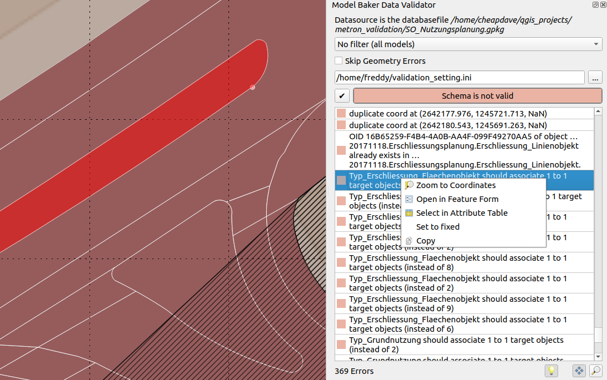
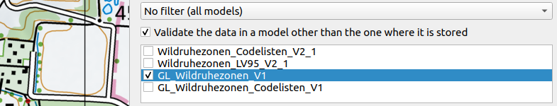
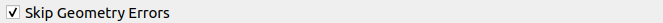
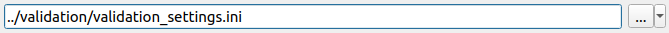
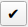

Validation des données
Vous pouvez valider vos données physiques par rapport aux modèles INTERLIS directement dans QGIS. Ouvrez le panneau Model Baker Validator par le menu Base de données > Model Baker > Validateur de données ou Vue > Panneaux > Validateur de données Model Baker.

Base de données
Les paramètres de connexion à la base de données sont émis à partir de la couche actuellement sélectionnée. En général, cette couche est représentative de l'ensemble du projet, étant donné qu'un projet repose généralement sur un seul schéma/fichier de base de données. En cas d'utilisation de plusieurs sources de base de données, il est possible de passer d'un résultat de validation à l'autre en changeant de couche.
Filtres
Vous pouvez filtrer les données soit par modèles soit - si la base de données prend en compte Dataset and Basket Handling - par l'ensemble de données ou par les paniers. Vous pouvez choisir plusieurs modèles/ensembles de données/paniers. Mais un seul type de filtre (--modèle, --dataset, --basket) est donné à la commande ili2db (elle ne ferait pas de conjonction (AND) mais une disjonction (OR) si plusieurs paramètres étaient donnés (ce qui n'est pas vraiment utilisé). Une conjonction peut toujours être réalisée en sélectionnant la plus petite instance (paniers)).
Valider dans le modèle de base
Ceci est important si vous utilisez des modèles étendus : Vos données sont stockées dans votre modèle étendu, mais vous souhaitez peut-être les valider uniquement dans le format du modèle de base.

Ignorer les erreurs de géométrie

Lorsque la case à cocher est activée, les erreurs de géométrie sont ignorées et la validation de la topologie AREA est désactivée. Les erreurs de ce type ne seront pas répertoriées.
- Géométries intersectées
- Coordonnées en double
- Superposition de géométries
Note
dans le backend, les paramètres --skipGeometryErrors et --disableAreaValidation sont définis.
Fichier de configuration
Il est possible d'activer/désactiver et de nommer les contraintes du modèle actuel via les attributs méta. Pour la configuration de ceux-ci, voir le chapitre [Définir les méta-attributs dans le fichier de configuration].(#set-meta-attributes-in-the-config-file) ci-dessous.
Ajoutez-le à la validation en le sélectionnant via le navigateur de fichiers.

Vous pouvez enregistrer ce chemin dans votre projet (dans les variables du projet) avec le bouton  . Bien qu'il soit sauvegardé de manière relative, il est transmis à ili2db en tant que chemin absolu.
. Bien qu'il soit sauvegardé de manière relative, il est transmis à ili2db en tant que chemin absolu.
Note
Vous pouvez également utiliser un fichier de configuration provenant des dépôts ilidata. Ajoutez simplement la clé ilidata (comme ilidata:<key>) comme chemin d'accès.
Résultats
Après avoir effectué la validation en appuyant sur le bouton

, les résultats sont listés.En cliquant avec le bouton droit de la souris sur l'erreur, un menu s'ouvre avec les options suivantes :
- Zoom sur les coordonnées (si les coordonnées sont fournies) avec une extension de 10 unités cartographiques
- Ouvrir dans le formulaire des caractéristiques (si un t_ili_tid stable est disponible)
- Sélectionner dans la table d'attributs (si un t_ili_tid stable est disponible)
- Set to fixed (marquer la marque d'entrée en vert pour organiser le processus de fixation)
- Copier (pour copier le texte du message)
Les fonctions automatiques de panoramique, de zoom et de mise en évidence des caractéristiques ou des coordonnées sont exécutées en cliquant sur l'entrée du tableau des résultats. Lors d'un panoramique et d'un zoom automatiques, les coordonnées sont prises en compte si elles sont fournies par ili2db, sinon la géométrie de l'élément est prise en compte (selon l'OID fourni par ili2db). Lors d'un zoom automatique sur la géométrie de l'élément, c'est son étendue qui est prise en compte et, pour les coordonnées, une extension de 10 unités cartographiques à la place.
Note
Comme ili2db fournit parfois les coordonnées pour les erreurs non géométriques, il peut y avoir une confusion lorsqu'il effectue un zoom ou un panoramique sur les coordonnées. Il est toutefois préférable de ne pas effectuer de zoom ou de panoramique sur les coordonnées pour les erreurs géométriques lorsqu'elles fournissent un OID. Actuellement, le validateur ne peut pas faire la différence entre ces types d'erreurs.
Utilisation des méta-attributs dans la validation
Outre la configuration des méta attributs utilisés pour la mise en œuvre de la base de données physique et pour la génération du projet QGIS, les métaattributs peuvent être utilisés pour une configuration supplémentaire de la validation, par exemple pour désactiver des contrôles spécifiques de manière générale ou sur des objets spécifiques, ainsi que pour donner un nom aux contraintes.
Définir les méta-attributs dans le fichier ILI
Voir cet exemple :
[...]
CLASS Resident =
!!a mandatory constraint that is deactivated
!!@ ilivalid.multiplicity = off
ID: MANDATORY TEXT;
Name: TEXT;
IsHuman: BOOLEAN;
!!a logical constraint that is deactivated
!!@ ilivalid.check = off
SET CONSTRAINT WHERE IsHuman:
DEFINED(Name);
END Resident;
[...]
Ni la contrainte obligatoire sur l'ID ni la contrainte logique ne seront prises en compte dans la validation.
Vous pouvez également remplacer le message / le nom des contraintes logiques :
[...]
!!@ name = MandatoryHumanName
!!@ ilivalid.msg = "When the resident {ID} is human, then it needs a name."
SET CONSTRAINT WHERE IsHuman:
DEFINED(Name);
[...]
Note
Lorsque le ilivalid.msg est défini, le name n'est pas affiché dans le validateur Model Baker.
Voir tous les méta-attributs possibles dans la [documentation officielle de ilivalidator] (https://github.com/claeis/ilivalidator/blob/master/docs/ilivalidator.rst#interlis-metaattribute).
Définir les méta-attributs dans le fichier de configuration
Étant donné que la personne qui valide les données n'est généralement pas la même que celle qui crée le modèle, il est possible de transmettre des métaattributs à la validation au moyen d'un fichier INI.
Avoir la classe dans le modèle INTERLIS :
MODEL ModernCity_V1 (en) =
TOPIC Living =
CLASS Resident =
ID: MANDATORY TEXT;
Name: TEXT;
IsHuman: BOOLEAN;
SET CONSTRAINT WHERE IsHuman:
DEFINED(Name);
END Resident;
[...]
Et l'attribut meta de l'exemple ci-dessus dans le fichier de configuration :
["ModernCity_V1.Living.Resident.ID"]
# disable mandatory constraint of ID
multiplicity="off"
["ModernCity_V1.Living.Resident.Constraint1"]
# disable first logical constraint of class Resident
check="off"
Note
En plus de les mettre à off, vous pouvez utiliser on pour réactiver la contrainte (si elle est désactivée dans le modèle INTERLIS) ou utiliser warning.
Vous pouvez également définir le message des contraintes dans le fichier de configuration :
["ModernCity_V1.Living.Resident.Constraint1"]
msg = "When the resident {ID} is human, then it needs a name."
Lorsqu'un nom est défini dans le modèle, vous pouvez l'utiliser ici :
["ModernCity_V1.Living.Resident.MandatoryHumanName"]
msg = "When the resident {ID} is human, then it needs a name."
Utilisez les méta-attributs listés ici [documentation de ilivalidator] (https://github.com/claeis/ilivalidator/blob/master/docs/ilivalidator.rst#interlis-metaattribute) sans le préfixe ilivalid..
Désactiver les contrôles généralement dans le fichier de configuration
Il peut parfois être utile de désactiver les contrôles en général, afin d'effectuer des validations distinctes pour chaque type de contrôle.
Utilisez pour cela la section "PARAMETER" :
["PARAMETER"]
#deactivate full validation
#validation="off"
#deactivates mandatory constraints
multiplicity="off"
#deactivates logical constraints
constraintValidation="off"
Voir pour toutes les configurations globales la [documentation officielle d'ilivalidator] (https://github.com/claeis/ilivalidator/blob/master/docs/ilivalidator.rst#ini-globale-konfigurationen).
Note
La validation désactivée est utile car elle permet de vérifier que tout va bien en ce qui concerne les aspects techniques (comme t_typ, t_id, etc.).
li2db avec --validate en arrière-plan
Lors de la validation, ili2db est utilisé en arrière-plan avec le paramètre --validate. Cela signifie qu'aucune exportation des données n'est nécessaire. La sortie est analysée par Model Baker et fournie dans la liste des résultats.
Les entrées de type Error et Warning sont listées.